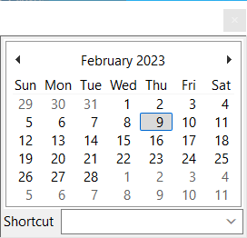

MonthCalControl
(date = '', daystate = false)
Uses the Windows MonthCal common control to display a calendar from which the user can select a date.

Methods:
- SetDayState(state)
- Sets the day states for all months that are currently visible within a month calendar control. state is a list of integers, one per month, with one bit per day.
Send's the following:
- DateSelectChange(date)
- When a date is selected (i.e. MCN_SELECT)
- MonthCalSelChange(date)
- When anything is changed (i.e. MCN_SELCHANGE)
- GetDayState(start_date, num_days) => list
- This is called if daystate is true. It should return a list of integers, one per month, with one bit per day.